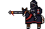
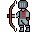

Dans le premier niveau, Prince Croc devra traverser un village médiéval mais attention, il est bien gardé !
Description
Prince Croc part à la recherche des morceaux de sa couronne cassée, sa première épreuve sera de traverser ce village. Arrivera-t-il à récupérer un premier morceau ?
Ennemis
Chevalier
Ce chevalier reste toujours sur ses gardes lorsqu'il patrouille pour garder le village. Il attaque avec sa lance.

Archer
Cet archer inflige des dégâts à distance grace à son arc !
